Comunidad HP
El espacio donde la cultura Hutchison Ports cobra vida: conectar, comunicar, reconocer y participar todos los dias.
MuroForosNoticiasEventosDinamicasSoporte

Gatewayby Hutchison Ports. Una sola puerta de entrada al desarrollo, la comunicacion y la comunidad de cada colaborador.
Cada necesidad vive en una herramienta distinta. El resultado es esfuerzo disperso, baja participacion y poca visibilidad.
La capacitacion vive en una plataforma externa, separada del dia a dia.
Avisos y noticias repartidos en canales sueltos, sin un lugar comun.
No existe un espacio para conectar, compartir y reconocerse entre pares.
Medir el avance de la formacion cuesta horas de trabajo en hojas de calculo.
Una experiencia integrada donde el colaborador aprende, participa, se informa y crece, con la marca y los valores de Hutchison Ports de principio a fin.
Red social corporativa, foros, eventos, noticias y gamificacion que mantienen viva la cultura.
Formacion estructurada: tronco comun y especializaciones con diplomados y certificados.
Inteligencia de capacitacion en tiempo real para decidir con datos, no con suposiciones.
Feed social corporativo.
Preguntas y respuestas por tema.
Comunicacion oficial priorizada.
Calendario corporativo.
Juegos diarios y semanales.
Gamificacion transversal.
Encuestas y evaluaciones.
Tickets internos con SLA.
Politicas con versionado.
Congreso de Calidad.
15 modulos formativos.
3 especializaciones.
El espacio donde la cultura Hutchison Ports cobra vida: conectar, comunicar, reconocer y participar todos los dias.
Un lugar familiar, como una red social, pero corporativo y seguro, para compartir el dia a dia de cada unidad.
Las dudas se resuelven entre pares y la mejor respuesta queda disponible para toda la organizacion.
La noticia mas relevante se destaca sola, segun la autoridad que la emite y su vigencia. Sin curaduria manual: lo importante siempre esta arriba.
Vista por unidad o global, documentacion del evento con fotos despues de realizarse y boton para agregarlo al calendario personal del colaborador.
El gran diferenciador de Gateway: convertir la participacion diaria en un habito motivante.
Palabra del dia, rompecabezas, crucigramas, sopa de letras, memoria y mas, renovados constantemente.
Cada dia de participacion suma. La racha motiva a volver y mantener el habito vivo.
Ranking de participacion que despierta una competencia sana entre colaboradores y unidades.
Un sistema de recompensa transversal que premia toda participacion en la plataforma, con reglas que el administrador ajusta sin programar.
| Accion del colaborador | Recompensa |
|---|---|
| Publicar en el Muro | 100 pts |
| Comentar | 25 pts |
| Ganar el reto diario | 50 pts |
| Reto semanal | 200 pts |
| Responder en un foro | 5 pts |
Tickets internos con folio, categorias, prioridades y seguimiento de tiempos de respuesta (SLA).
Encuestas y evaluaciones con resultados agregados para escuchar a la organizacion.
Repositorio central de politicas y reglamentos, con versionado e historial completo.
Memoria del Congreso de Calidad: proyectos, premios y unidades ganadoras edicion tras edicion.
La ruta de crecimiento profesional de cada colaborador: del tronco comun a las especializaciones de liderazgo.
La base de conocimiento que todo colaborador de Hutchison Ports comparte, organizada por areas clave del negocio.
Trayectorias con prerrequisitos, diplomados encadenados y certificacion, para formar a los lideres del puerto.
Tableros ejecutivos que cruzan modulos, unidades y niveles para ver el avance de la formacion de un vistazo.
Avance global, graduados por nivel y mapas de calor por unidad.
Quien esta donde en el proceso, filtrando por unidad, nivel y estatus.
Carga masiva desde Excel y descarga de reportes listos para presentar.
Formacion a la mano, comunidad activa, reconocimiento por participar y soporte cuando lo necesita.
Publica noticias y eventos, gestiona foros y formularios, e impulsa la participacion de su area.
Configura dinamicas y recompensas, modera, audita y consulta el avance con datos confiables.
Gateway esta disenado para crecer. El siguiente horizonte profundiza el desarrollo del talento y el reconocimiento.
Cursos, contenido, inscripciones, progreso y certificados dentro de Gateway, sustituyendo plataformas externas.
Prioridad estrategicaConvertir los puntos acumulados en beneficios tangibles para los colaboradores.
En evaluacionAvisos push y por correo, y conexion con calendarios y sistemas corporativos.
En el roadmapUna sola puerta de entrada al desarrollo, la comunidad y la cultura de Hutchison Ports.